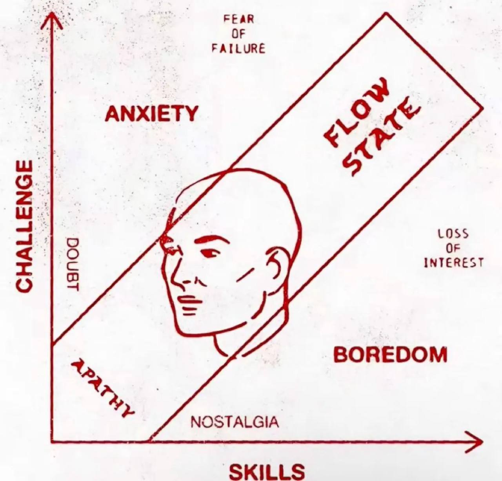

| Aceite 2025-10-03 flow quotes > Aceite, depois aja. O que quer que o momento atual contenha, aceite-o como uma escolha sua. Trabalhe sempre com ele, não contra. Torne-o um amigo e aliado, não seu inimigo. Isso transformará toda a sua vida, como por milagre. |
| Padrões de pensamento 2025-09-27 flow quotes > Em geral, não temos consciência de todos os nossos padrões de pensamento. Só é possível trazê-los à consciência quando observamos nossas emoções. > O Poder do Agora: Um guia para a iluminação espiritual (Tolle, Eckhart) |
| O Poder do Silêncio (Eckhart Tolle, 2004) 2025-09-10 drafts flow self books > Perceba que a voz existe e que não é você. Liberdade é reconhecer-se como a consciência por trás da voz. > Abandone o padrão da mente auto entrada ao perceber que está vivendo para o momento seguinte. |
| O Poder do Agora (Eckhart Tolle, 1997) 2025-07-05 drafts flow self books > Embora eu continuasse vivendo normalmente, tinha percebido que nada que eu viesse a fazer poderia mudar realmente a minha vida. Eu já tinha tudo de que necessitava. Essa é a moral por trás de O Poder do Agora, de Eckhart Tolle, que mistura filosofia e uma pitada de religião em prol do bem-estar do ser humano, independente de seus valores, profeta ou deus. O livro é uma série de ensinamentos sobre se libertar de sua mente. |
| Constituição fundamental (J. S. Mill) 2025-06-16 quotes flow self > Nenhum grande aperfeiçoamento da humanidade como um todo é possível até que uma grande mudança tenha lugar na constituição fundamental de seu modo de pensar. > J. S. Mill |
| Journalistic Philosophy 2025-06-03 flow self > Journalistic philosophy is the last and most advanced philosophy. In that approach you can rapidly switch between shallow to deep work. Essa frase é de [Deep Work => Flow], um artigo de um blogue que explicava a relação entre ambos os livros e que usei como base para a posterior leitura desses livros. Este é segundo o autor o método mais avançado de focar em uma atividade. |
| Apanhado sobre o flow de cada dia 2025-05-24 flow self Todas as referências abaixo falam sobre a mesma coisa: a relação entre o caos e a ordem, a repetição como ordem necessária, mas o caos como o gatilho para descobertas necessárias, a força do ego em manter o círculo eterno e o poder da intuição em nos mover para dentro do redemoinho. |
|  Flow com ênfase na teoria de sistemas 2023-10-03 flow self books Reli pela enésima vez minhas anotações sobre Flow, aquele [livro do Mihaly Csikszentmihalyi], e venho dessa vez com anotações das anotações com ênfase na teoria de sistemas. O resumo é que o self, esse sistema dinâmico que reconhecemos como nós, pode ser expandido ao se acoplar a qualquer outro sistema onde invistamos energia psíquica. Porém, para isso funcionar, devemos reorientar nossa atenção e focar, ou seja, empreender nossa energia psíquica, muito mais no sistema que está sendo a atividade do momento e muito menos em nós mesmos ou em outros inputs externos que não faz parte do sistema e que é apenas entropia. É quando o self vira o sistema que nós podemos resgatar novas informações que irão ser adicionadas ao sistema original. A isso chamamos aprendizado do mundo. Nosso ser se expande e nosso organismo ressoa em harmonia. |
| Flow pragmático 2023-08-21 flow repost books self Seja durante o trabalho ou no lazer, quando não está claro qual o objetivo final não é fácil focar.  Por isso reli minhas anotações sobre [o livro de Mihaly Csikszentmihalyi] sobre como estruturar nossa consciência de forma a conseguir aos poucos alinhar a energia psíquica a maior parte do tempo possível. E deve ser aos poucos, já que o "eu" não pode se sentir impelido a fazer algo; ele precisa entender dentro de si o que ele quer fazer mais que tudo na vida. |
| Flow: The Psychology of Optimal Experience (Mihaly Csikszentmihalyi, 1990) 2020-09-27 drafts flow self books  Este é um dos livros mais importantes que já li e acredito que pode ser muito importante para você também. Por isso quero dedicar algumas linhas para argumentar por que você deve lê-lo, ainda que ele seja denso demais para a maioria das pessoas. |
| Deep Work => Flow 2019-05-09 flow self (Deep Work) => Flow - A proven Path to Satisfaction, de Robin Wieruch, é um resumo valioso de dois livros, um sobre deep work e outro sobre flow, e como ambos se relacionam. Robin é um programador e também leu On Writing Well (ele possui algumas notas sobre essa leitura também). |